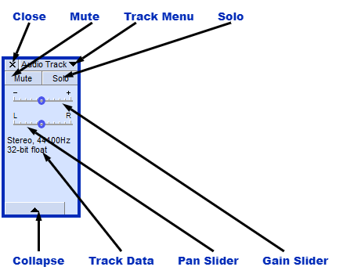
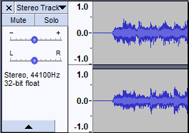
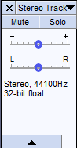
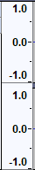
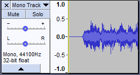
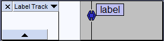
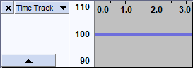
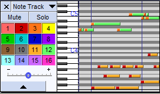
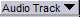

Track Control Panel and Vertical Scale
- 
Contents
Audio (stereo) Track
- 
Track Control Panel
 The Track Control Panel at the left of the audio track has controls and status indicators for this track. Left-clicking other than on a control performs track selection. Left-clicking other than on a control and dragging up and down rearranges the order of the tracks. The controls are as follows:- An button to delete the track.
- A dropdown menu, accessed by clicking on the track name or the little black triangle at the top right of the Track Control Panel, enabling you to edit or move the audio track.
- and buttons mute or solo the track
- Gain slider for adjusting the volume of the track
- Pan slider to position the audio of this track in the stereo sound stage.
- Status indicators to show the sample rate in Hz and the sample format or bit depth.
- A button to collapse or restore the height of the track.
| How the buttons affect other tracks depends on your Solo button preference setting |
Vertical Scale
 The Vertical Scale displays amplitude when showing the waveform, or frequency when showing the spectrum or pitch. - The amplitude scale shown to left is the default linear scale, with 1.0 being the maximum value of positive signals and -1.0 the maximum of negative signals.
- If the display is changed to Waveform dB in the Audio Track Dropdown Menu, the scale shows dB values for positive signals only, ranging from maximum 0 dB to the minimum dB level set in Interface Preferences, or as varied using the mouse wheel (see below).
For details please see this section of the Audio Tracks page.
The Vertical Scale can be used to control Vertical Zooming- Right-click in the Vertical Scale will bring up the dropdown context menu. For details see Simple mode vertical zooming.
- If enabled in Preferences, when the mouse pointer is over the scale it changes to a magnify icon
 enabling you to zoom vertically using the mouse controls. For details see Advanced mode vertical zooming
enabling you to zoom vertically using the mouse controls. For details see Advanced mode vertical zooming
Mono Track
A mono track has the same set of controls as a stereo track
- 
Label Track
- 
A label track has an empty Vertical Scale Ruler.
It does have a dropdown menu, accessed by clicking on the track name or the little black triangle at the top right of the Track Control Panel, enabling you to edit or move the label track.
Please see this section of the Audio Tracks page for details.
Time Track
- 
The vertical Scale in Time Tracks can be set to either Linear Scale (default setting, as shown here) or Logarithmic Scale. This along with other settings for your Time track can be controlled from the dropdown menu accessed by clicking on the track name or the little black triangle at the top right of the Track Control Panel.
See this section of the Time Tracks page for more details.
Note Track
- 
Note Tracks display (and play) data from MIDI files.
The Track Control Panel and Vertical Scale are rather different to all other tracks in Audacity:
- The Vertical Scale shows the pitch position of the displayed notes shown on a piano keyboard. As with the audio tracks you can zoom the scale of the Vertical Scale piano keyboard using your mouse.
- The Track Control panel shows the channels, color coded to tie in with the channels displayed, that are to be played and allows you to toggle individual channels by left-clicking or toggle all other channels off by right-clicking.
For more details please see Note Tracks.
Audio Track Dropdown Menu
The Audio Track Dropdown Menu is accessed by clicking in the Track Name, by the downward-pointing triangle  in the Track Control Panel.
Alternatively, you can access the Track Dropdown Menu on the currently focused audio track by pressing Shift + M.
You can use the Auduio Track dropdown menu to manipulate individual mono or stereo tracks:
- Rename a track
- Move a track up or down in the project window
- Set the current type of view for the track
- Swap the channels of a stereo track
- Make or split stereo tracks
- Select the colorway to be used for the waveform display
- Set the current sample rate and sample format for the track.
There is no need to select the track before accessing the dropdown menu.